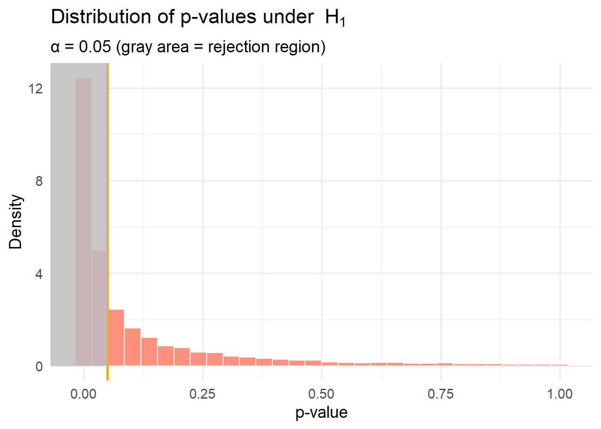

Code
# Parameters
mu0 <- 98.6
n <- 4
sigma <- 1
alpha0 <- 0.05
# Step 1: Simulate data under H0
# Each sample has size n, sampled from Normal(mu0, sigma)
n_sims <- 10000
samples <- replicate(n_sims, rnorm(n, mean = mu0, sd = sigma))
# Step 2: Compute two-sided p-values for each simulated sample
sample_means <- colMeans(samples)
z_vals <- abs(sample_means - mu0) / (sigma / sqrt(n))
p_values <- 2 * pnorm(-z_vals)
# Step 3: Create data frame for plotting
df <- tibble(p_value = p_values)
# Step 4: Plot p-value distribution vs Uniform(0,1)
ggplot(df, aes(x = p_value)) +
geom_histogram(aes(y = after_stat(density)), bins = 30, fill = "skyblue", color = "white", alpha = 0.7) +
geom_hline(yintercept = 1, color = "black", linetype = "dashed") +
geom_vline(xintercept = alpha0, color = "orange", size = 1) +
geom_rect(aes(xmin = 0, xmax = alpha0, ymin = 0, ymax = Inf),
fill = "gray", alpha = 0.3, inherit.aes = FALSE) +
labs(
title = "Distribution of p-values under H0",
x = "p-value",
y = "Density",
subtitle = paste0("α = ", alpha0, " (gray area = rejection region)")
) +
theme_minimal(base_size = 14)